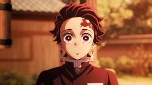

SOLO
Em Solo Leveling o mundo onde humanos possuem habilidades mágicas para lutar contra monstros mortais e proteger a raça humana da aniquilação Sung Jinwoo (Aleks Le) é apenas um simples caçador sem habilidades ou forças notáveis, mas um dia, é selecionado para um estranho programa chamado Sistema, para ser o único a receber raras habilidades, tornando-se possivelmente o caçador mais forte já visto, com sua nova força ele inicia uma jornada para descobrir a verdade sobre seus novos poderes, mas no caminho terá que enfrentar novos inimigos, humanos e monstros.
KIMETSU
Em Kimetsu no Yaiba, Tanjiro, um bondoso jovem que ganha a vida vendendo carvão descobre que sua família foi massacrada por um demônio. E, para piorar, Nezuko, sua irmã mais nova e única sobrevivente, também acabou transformada em um demônio. Arrasado com essa sombria realidade, Tanjiro decide se tornar um matador de demônios para fazer sua irmã voltar a ser humana e para destruir o demônio que matou seus entes queridos.
